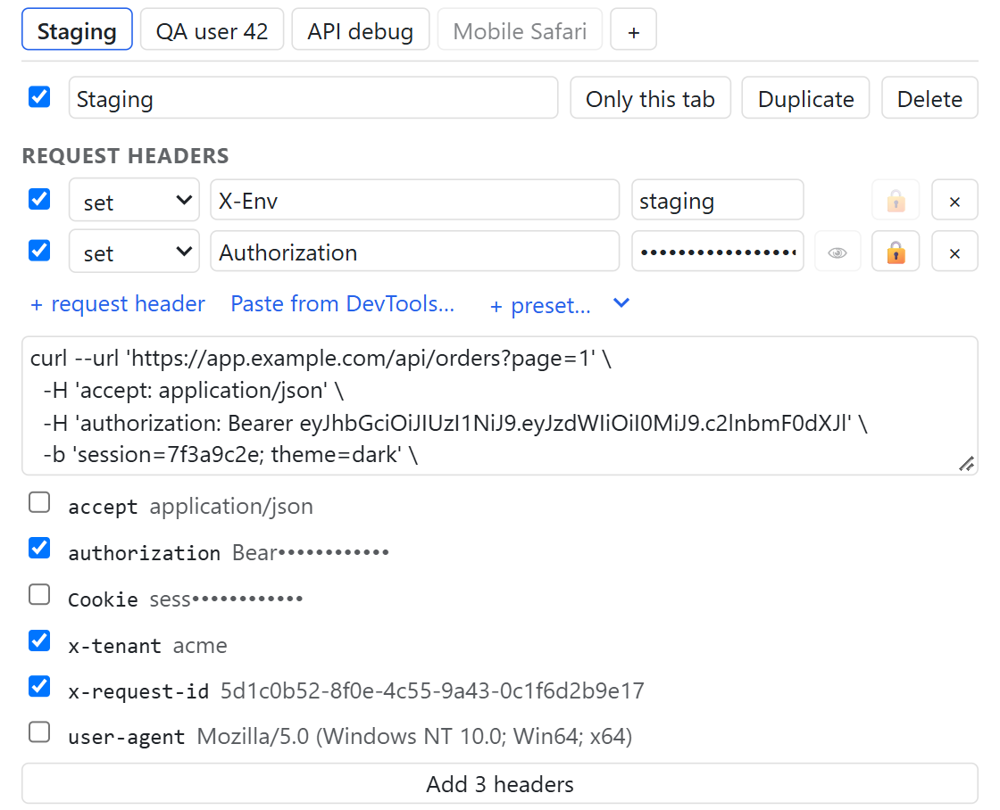
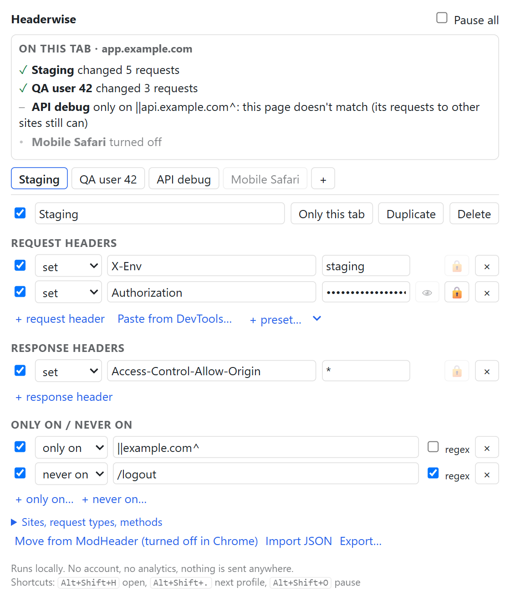
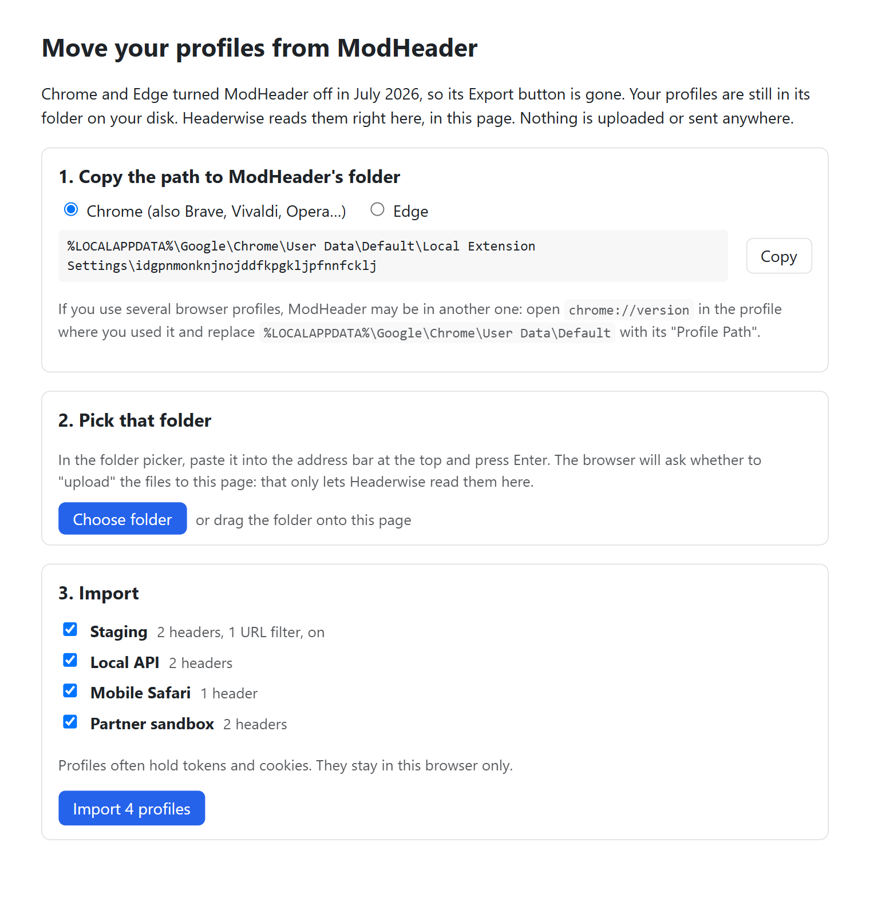
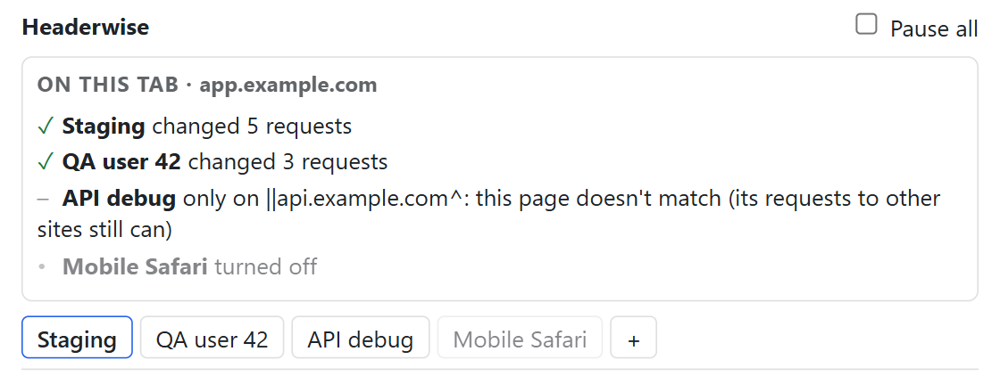
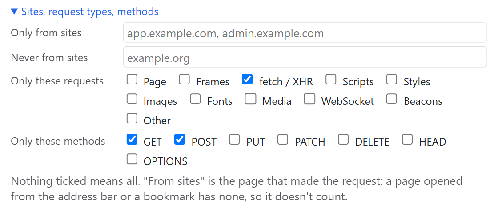

Paste a request from DevTools
Copy as cURL, fetch or PowerShell, paste, and tick the headers you want. Tokens and cookies show as dots.

Profiles for request and response headers in Chrome and Edge. Free, open source, and it can't send your data anywhere.

ModHeader was removed from the Chrome and Edge stores in July 2026 after a hidden domain collector was found in it. Headerwise is built so that can't happen, and you can check it yourself.
"content_security_policy": { "extension_pages": "default-src 'self'; img-src 'self' data:; connect-src 'none'; object-src 'none'; base-uri 'none'; form-action 'none'" }
No network accessThis line in the manifest covers every page of the extension and its background worker. A test checks it in a real browser on every change.
Never reads your pagesChrome applies the header rules itself through declarativeNetRequest. Headerwise never sees page content or request bodies.
No account, no analyticsYour profiles stay in your browser's local storage. Nothing is synced to a server, because there is no server.
Open codeRead it, build it, and compare it with what the store ships. Site access is asked for only when you click "Allow".

If your browser turned ModHeader off, its Export button went with it. Your profiles are still on your disk. Pick ModHeader's folder and Headerwise reads them right in the page. Nothing is uploaded.
Open the popup to see which profile changed how many requests on the current page, or which filter kept another one off. The Network panel in DevTools may not show these changes; this does.

Copy as cURL, fetch or PowerShell, paste, and tick the headers you want. Tokens and cookies show as dots.

Limit a profile to some URLs, to requests made by some sites, to fetch calls or POSTs, or to a single tab.

The parts you reach for every day, without a paid tier in the way.
DevTools is the right tool for looking at headers. For changing them day to day, it falls short.
They work well together: copy a request from the Network panel and paste it into Headerwise.
Yes, with no limits. If paid features come later, they will be new things such as team policies. Nothing that is free now will move behind a paywall.
Chrome only lets an extension change headers on sites it has access to. Headerwise asks only when you click "Allow on all sites", and you can take it back in the browser's extension settings at any time.
The manifest blocks network access for the whole extension, so the browser refuses any request it might try. The code is on GitHub, and your profiles live in the browser's local storage.
The browser applies these changes after DevTools records the request, so the Network panel can show the original headers. Open the Headerwise popup instead: "On this tab" shows what was changed.
Chrome and Edge are tested on every change. Other Chromium browsers that install extensions from the Chrome Web Store, such as Brave and Vivaldi, should work too. Firefox is planned.
Click "Move from ModHeader" in the popup. It shows the folder to pick for your browser and reads it in the page. If you have an exported JSON file, use "Import JSON" instead.